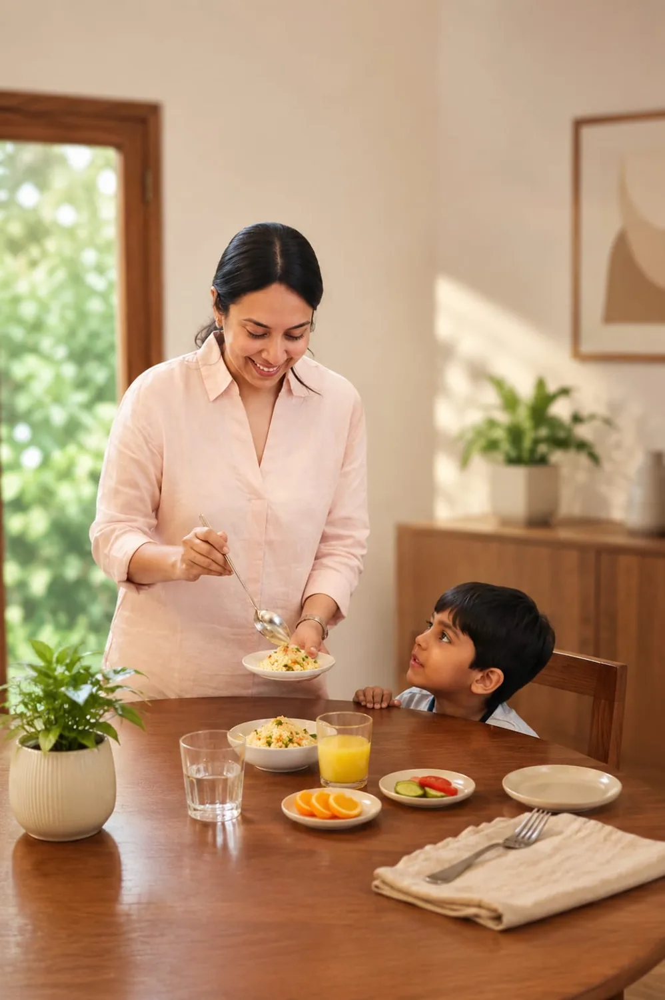
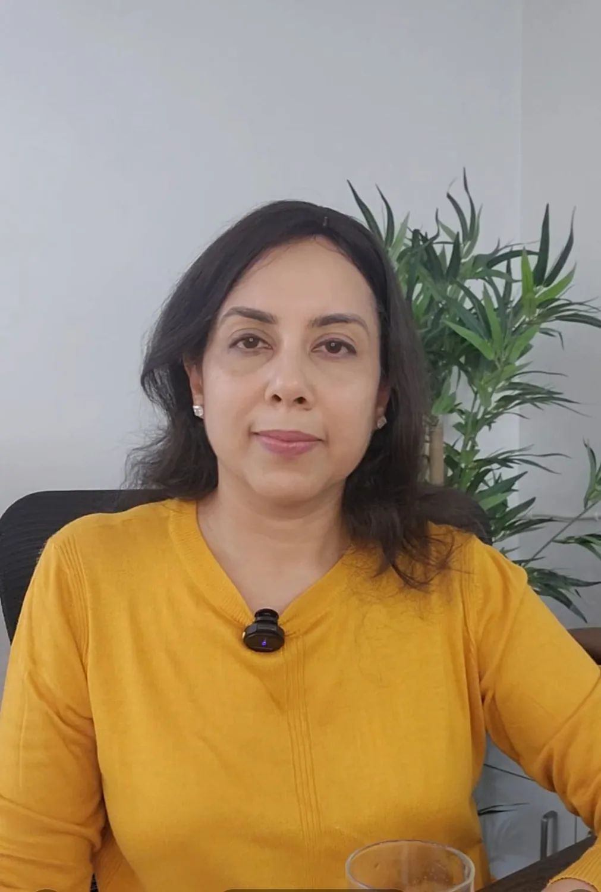
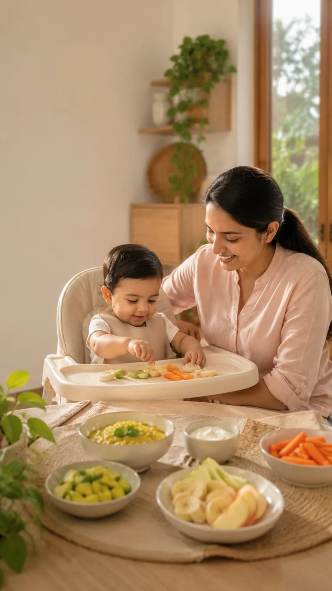
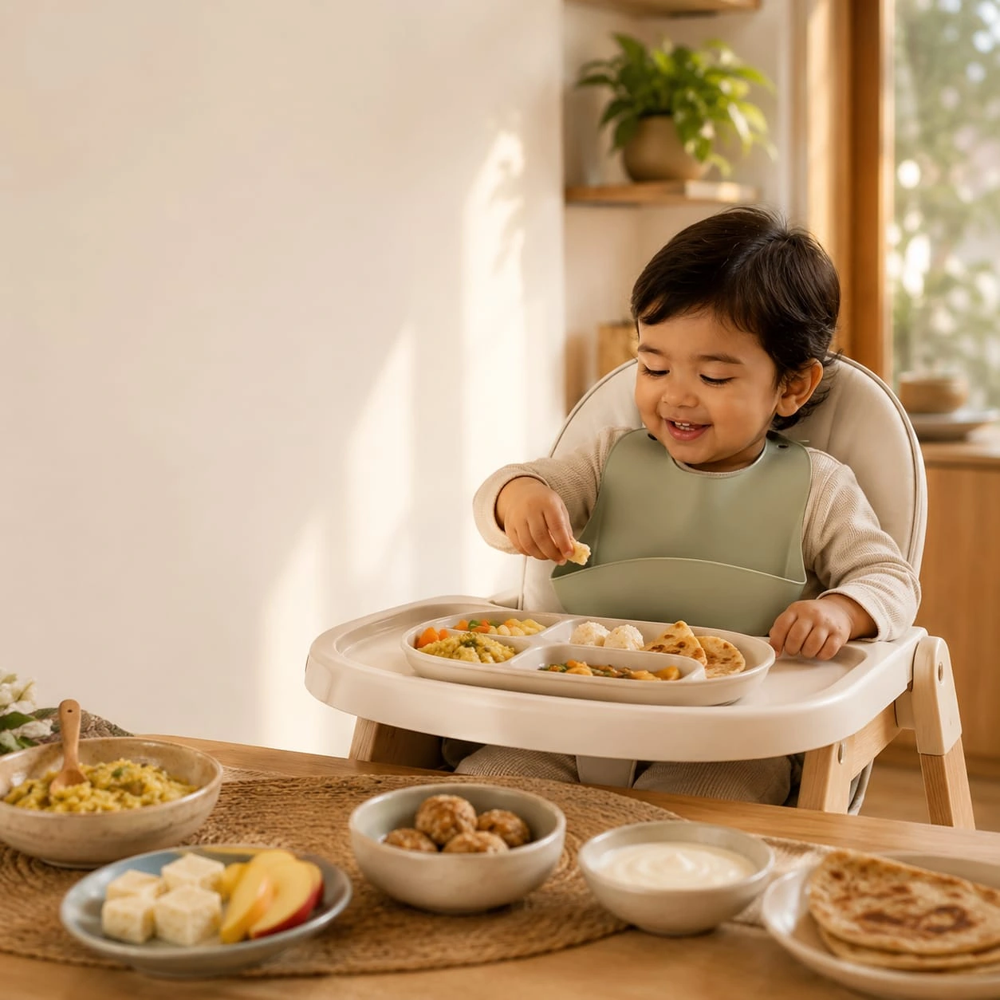
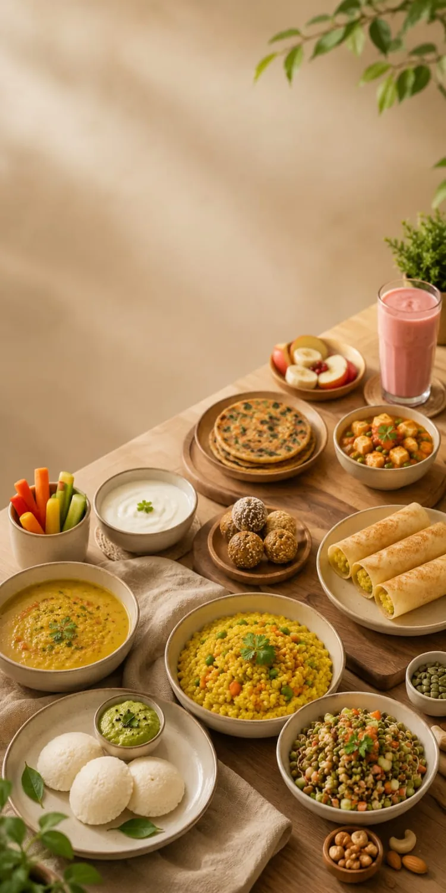
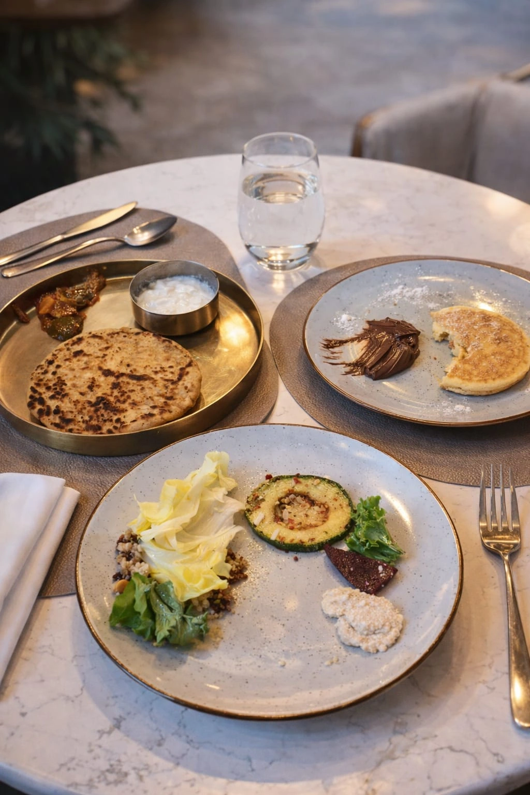
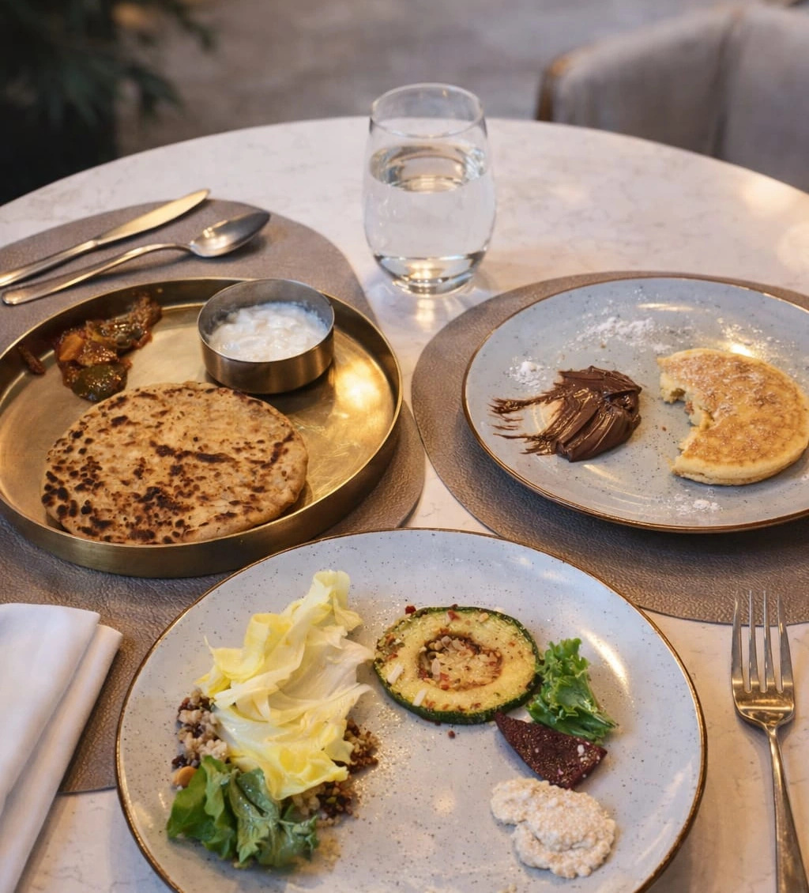
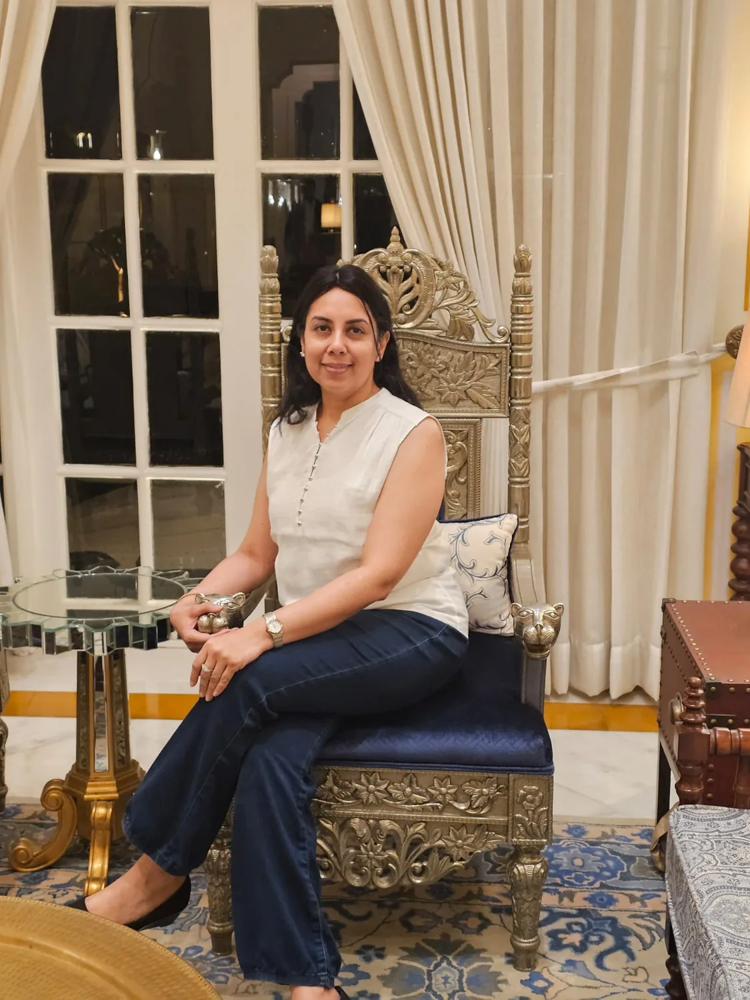
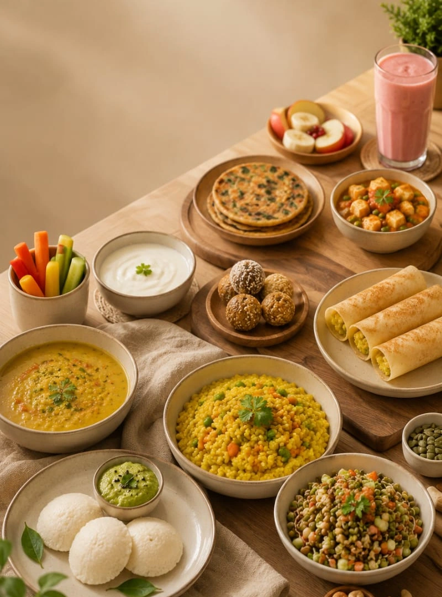
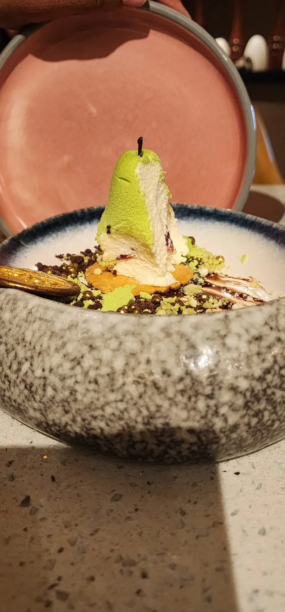

Child Nutritionist & Family Wellness Guide
Raising healthy eaters without stress, pressure, or confusion.
Personalized child, family, and postpartum nutrition guidance designed for real Indian homes, busy moms, picky eaters, and growing children.
Certified Nutrition Consultant
Child & Family Nutrition
Practical Indian Meal Plans
Emotional Support for Moms

No guilt. No force.
Just calm, practical nutrition systems for your home.

Meet Your Nutrition Guide
Warm, practical nutrition guidance for mothers who are tired of guessing.
NutriWhizz by Ruchi Sonthalia helps mothers build healthier eating habits for children and families without pressure, guilt, unrealistic diets, or complicated charts.
The approach is calm and deeply practical: child nutrition, family nutrition, postpartum nourishment, Indian meals, emotional support for mothers, and routines that work in real homes.
Child nutrition
Family meal systems
Postpartum support
Indian food wisdom
No guilt or pressure
Emotional safety for moms
Programs
Choose support that meets your family where it is.
Every program combines clear nutrition direction, Indian meal planning, emotional steadiness, and practical support between calls.

6 months+ | 8 weeks
Starting Solids Program
Start solids with confidence, not confusion.
- 8 Zoom calls
- 8 weeks WhatsApp support
- Veg, non-veg, and Indian meal plans
- E-recipe book and myth support

1-3 years | 4 weeks
Toddler Nutrition
For food refusal, tantrums, irregular eating, and better routines.
- 4 Zoom calls
- 4 week meal plan
- Community access
- Emotional support for mother and child

4-8 years | 4 weeks
Child Nutrition
For immunity, school meals, growth, energy, and healthy habits.
- 3 parent Zoom calls
- Optional child call
- WhatsApp support
- Meal plan and recipe book

9-14 years | 4 weeks
Pre-Teen Nutrition
Nutrition support for growing bodies, changing routines, and independence.
- Parent intake call
- Child counselling call
- 2 weekly review calls
- Meal plan and WhatsApp support
4 weeks
Picky Eating Program
Stop food battles and rebuild your child's relationship with food.
- 1 deep-dive call
- 3 follow-up calls
- Videos for moms
- Meal plan, community, and WhatsApp support
New moms | 4 weeks
Postpartum Nutrition & Emotional Wellbeing
Recovery support that nourishes both body and emotions.
- 4 Zoom calls
- Full WhatsApp support
- Meal plan
- Emotional wellbeing support

Whole family | 2 weeks
Family Nutrition Consultation
One practical meal system for the whole family.
- 60 min intake call
- 30 min review call
- Full WhatsApp support
- No separate cooking required

45 minutes
General Consultation
For specific concerns when you need clarity quickly.
- 45 min Zoom call
- Any nutrition concern
- Personalized direction
- Clear next steps

Monthly
Monthly Meal Plan
Structured meal planning for busy homes.
- Monthly meal plan
- 3 Zoom calls
- WhatsApp support
- Based on routine and preferences
Program Details
What each journey includes.
Starting Solids Program
Who this is for: Anxious moms starting first foods from 6 months onward.
What we solve: Confusion around textures, family interference, food myths, allergens, vegetarian/non-vegetarian choices, Indian meals, and quantity worries.
Process: 1 Zoom call of 40-60 mins, 7 Zoom calls of 30 mins, 8 weeks WhatsApp support, preference-based meal plans, and e-recipe book.
Transformation: You begin feeding with calm confidence, not second-guessing.
Book Starting SolidsToddler Nutrition
Who this is for: Toddlers with food refusal, tantrums, irregular eating, or low appetite.
Includes: 1 deep intake call, 3 follow-up calls, 4 week meal plan, WhatsApp support, community, e-recipe book, and emotional support.
Transformation: Better routines, calmer mealtimes, and more confidence for both mother and child.
Book Toddler NutritionChild Nutrition
Who this is for: Children aged 4-8 needing support with immunity, growth, school tiffins, gut health, energy, and healthy eating habits.
Includes: 1:1 Zoom call of 40-60 mins, 2 Zoom calls of 30 mins, optional child call, WhatsApp support, 4 week meal plan, community, and e-recipe book.
Book Child NutritionPre-Teen Nutrition
Who this is for: Children aged 9-14 navigating growth, independence, school routines, emotional changes, cravings, and food habits.
Includes: 40-60 min intake call, 1 child counselling call, 2 weekly review calls, meal plan, and WhatsApp support.
Book Pre-Teen NutritionPicky Eating Program
What we move away from: "Just one more bite", screen feeding, pressure, bribes, and mealtime battles.
Includes: 1 Zoom call of 60 mins, 3 Zoom calls of 30 mins, full WhatsApp support, meal plan, videos for moms, community, and emotional support.
Transformation: Serve calmly, sit together, and help your child explore food without pressure.
Join Picky Eating ProgramPostpartum Nutrition & Emotional Wellbeing
Who this is for: New mothers who need recovery meals, breastfeeding nourishment, energy support, mood steadiness, and emotional care.
Includes: 1 Zoom call of 60 mins, 3 Zoom calls of 30 mins, meal plan, full WhatsApp support, community, and emotional wellbeing support.
Book Postpartum SupportFamily Nutrition Consultation
Who this is for: Working moms and families who need one practical system instead of separate cooking for everyone.
Includes: 2 week program, 60 min family needs call, 30 min review call, full WhatsApp support, family meal plan, community, and e-recipe book.
Book Family ConsultationGeneral Consultation
Who this is for: A specific nutrition or health concern where you need clear direction quickly.
Includes: 45 min Zoom call, concern review, personalized direction, and next steps.
Book General ConsultationMonthly Meal Plan
Who this is for: Busy homes that need structure, variety, and practical Indian meals planned in advance.
Includes: Monthly meal plan, 3 Zoom calls of 30 mins each, WhatsApp support, and planning based on family preferences.
Book Monthly Meal PlanWhy Moms Trust NutriWhizz
Nutrition guidance that understands motherhood.
Children do not need pressure to build better habits. Mothers do not need guilt to make better choices. NutriWhizz gives you a realistic system for your child, your home, and your family dynamics.
No guilt-based nutrition
No forcing children to eat
No screen-dependent feeding
Practical Indian meals
Support for overwhelmed moms
Emotional wellbeing matters too
One realistic system for real homes
Guidance that respects family dynamics
Food Philosophy
Healthy food does not have to feel complicated.
NutriWhizz focuses on practical Indian meals, balanced plates, seasonal foods, child-friendly recipes, and routines families can actually follow.
Roti, dal, sabzi, dosa, chilla, idli, laddoos, fruits, curd, soups, tikkis, sprouts, paneer, and homemade snacks can become powerful everyday nutrition without extreme dieting, fear-based food rules, or separate fancy cooking.
Community
You are not alone in this journey.
Join a supportive space for mom support, shared struggles, guidance, accountability, recipe ideas, emotional encouragement, and practical solutions.
E-Recipe Book
Simple recipes your family can actually eat.
100+ practical Indian recipes, child-friendly ideas, healthy snacks, family-friendly options, and lifetime access where applicable.
Get Program Details
Testimonials
Real shifts mothers can feel.
"My child slowly started exploring new foods without crying at the table. I finally felt calm during meals."
Mother of a picky eater
"The meal plan was practical for our Indian home. I did not have to cook separate fancy food."
Family nutrition client
"Postpartum felt less lonely. The food guidance and emotional support helped me feel steady again."
New mother
FAQs
Questions moms often ask.
Which program is right for my child?
If you are unsure, book a consultation or message on WhatsApp. Ruchi will help you choose based on age, concern, routine, and family needs.
Do I need to cook separate meals?
No. The goal is to create Indian meal systems that work for the whole family wherever possible.
Is this suitable for picky eaters?
Yes. The picky eating program is designed to reduce pressure, improve food exposure, and help children rebuild trust with food.
Do you provide Indian meal plans?
Yes. Plans are based on Indian meals, family preferences, vegetarian/non-vegetarian choices, and realistic routines.
Is WhatsApp support included?
WhatsApp support is included in most structured programs and helps you get guidance between Zoom calls.
How are Zoom calls scheduled?
Calls are scheduled after booking based on availability and the program timeline.
Do you help with postpartum nutrition?
Yes. Postpartum nutrition and emotional wellbeing support is available for new mothers.
Can the whole family follow the same plan?
Yes, family nutrition focuses on one practical meal system rather than separate cooking for every person.
Do you support vegetarian and non-vegetarian preferences?
Yes. Meal plans can be adapted to vegetarian, non-vegetarian, and Indian family food preferences.
Is this medical treatment?
NutriWhizz provides nutrition and wellness guidance. It does not replace medical diagnosis or treatment. For medical concerns, consult a qualified doctor.
Book Consultation
Ready to make nutrition calmer for your family?
No pressure. No guilt. No complicated diets. Just practical guidance for your child, your home, and your life.
Message on WhatsApp